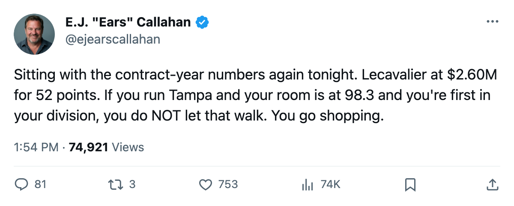
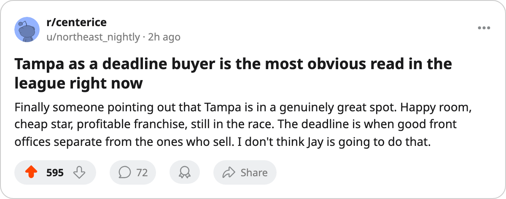

Buyers' Board: Tampa Holds the Class's Cheapest 89. The Room Is at 98.3.
Vincent Lecavalier turns 26 on an expiring deal at $2.60M while Lightning sit first in the Southeast and third in the league in club morale.
 E.J. "Ears" CallahanInsider · The Hot Stove
E.J. "Ears" CallahanInsider · The Hot Stove

Tampa Bay expected to be a buyer at the deadline

The piece
 Vincent Lecavalier89 is the cheapest elite contract-year name in the league. He makes $2.60M for 52 points in 42 games at 89 overall, and the
Vincent Lecavalier89 is the cheapest elite contract-year name in the league. He makes $2.60M for 52 points in 42 games at 89 overall, and the  Tampa Bay Lightning Lightning sit atop the Southeast with 53 standings points. The trade deadline is 66 days away, and league sources around the Meadowlands believe Tampa Bay will collect at it, not shed.
Tampa Bay Lightning Lightning sit atop the Southeast with 53 standings points. The trade deadline is 66 days away, and league sources around the Meadowlands believe Tampa Bay will collect at it, not shed.
Compare the salary tags across the 89-rated skaters in the class. Lecavalier at $2.60M.  David Legwand89 at $8.37M for 55 points.
David Legwand89 at $8.37M for 55 points.  Peter Forsberg95 at $9.90M for 51 points. No other 89-rated skater in the contract-year class carries a number that low.
Peter Forsberg95 at $9.90M for 51 points. No other 89-rated skater in the contract-year class carries a number that low.  Milan Hejduk88 at 88 overall makes $2.50M for 44 points, the closest comparable in rate, but he plays for a club holding 9 picks that is already a seller.
Milan Hejduk88 at 88 overall makes $2.50M for 44 points, the closest comparable in rate, but he plays for a club holding 9 picks that is already a seller.
The room agrees. Tampa Bay's club morale sits at 98.3, third in the league behind Colorado and Vancouver at 98.9. Lecavalier himself is at 100.  Dick Tarnstrom77, their 77-rated defenseman at 19.0 minutes a night, is also at 100. A club does not go shopping at the deadline when its two most important men are at the ceiling.
Dick Tarnstrom77, their 77-rated defenseman at 19.0 minutes a night, is also at 100. A club does not go shopping at the deadline when its two most important men are at the ceiling.
The front office has no reason to flinch
Tampa Bay pays $1.13M per standings point, the fifth-cheapest rate in the league. They turn $17.78M in profit on a $59.79M payroll with 16,907 in attendance per night. Their draft capital is four picks including one first-rounder, having dealt a third-rounder to Colorado in the December trade that sent long-term money to Nashville. They hold no picks from other clubs. They hoard picks because they are efficient, not because they have no choice.
The one name off the list returns tomorrow.  Jeff Halpern77, 77 overall, has been out with an abdomen injury since sometime between December 8 and December 11. His return date is January 13. The deadline clock hits 66 days on the same day a center comes back into the lineup.
Jeff Halpern77, 77 overall, has been out with an abdomen injury since sometime between December 8 and December 11. His return date is January 13. The deadline clock hits 66 days on the same day a center comes back into the lineup.
Morale, attendance, profit, a cheap star on an expiring deal, a playoff spot held, a healthy payroll structure. Those clubs buy.
Tampa Bay's previous playoff run reached the second round. They have not won a Cup and carry 1048 prestige points. A room at 98.3 that has already seen the second round will be restless by March unless the phone rings.
League sources say they expect Tampa Bay on the phone.

